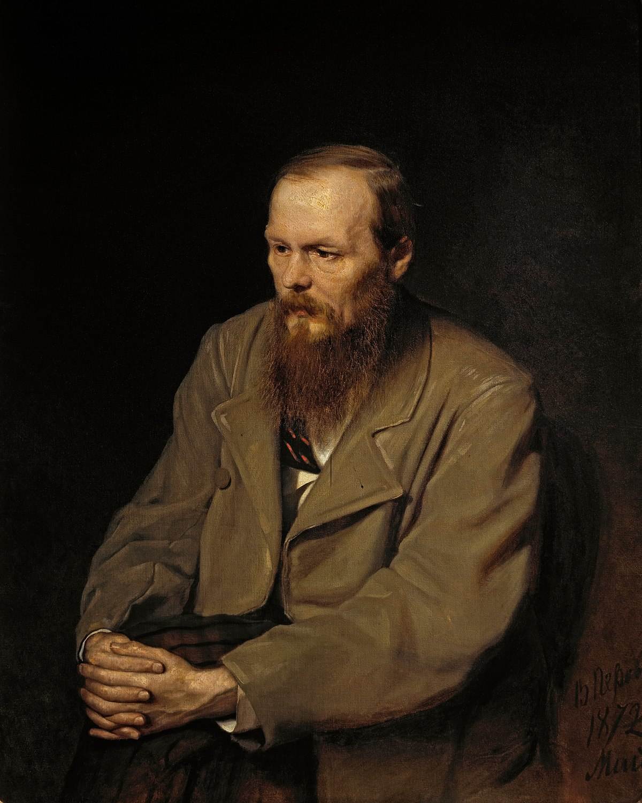

Main Information

Fyodor Mikhailovich Dostoevsky:
(11 November 1821 – 9 February 1881), sometimes transliterated as Dostoyevsky, was a Russian
novelist, short story writer, essayist and journalist. Numerous literary critics regard him as one
of the greatest novelists in all of world literature, as many of his works are considered highly
influential masterpieces. Dostoevsky's literary works explore the human condition in the troubled
political, social, and spiritual atmospheres of 19th-century Russia, and engage with a variety of
philosophical and religious themes. His most acclaimed novels include Crime and Punishment (1866),
The Idiot (1869), Demons (1872), The Adolescent (1875), and The Brothers Karamazov (1880). His 1864
novella Notes from Underground is considered to be one of the first works of existentialist
literature.
Born in Moscow in 1821, Dostoevsky was introduced to literature at an early age through fairy tales
and legends, and through books by Russian and foreign authors. His mother died in 1837 when he was
15, and around the same time, he left school to enter the Nikolayev Military Engineering Institute.
After graduating, he worked as an engineer and briefly enjoyed a lavish lifestyle, translating books
to earn extra money. In the mid-1840s he wrote his first novel, Poor Folk, which gained him entry
into Saint Petersburg's literary circles. However, he was arrested in 1849 for belonging to a
literary group, the Petrashevsky Circle, that discussed banned books critical of Tsarist Russia.
Dostoevsky was sentenced to death but the sentence was commuted at the last moment. He spent four
years in a Siberian prison camp, followed by six years of compulsory military service in exile. In
the following years, Dostoevsky worked as a journalist, publishing and editing several magazines of
his own and later A Writer's Diary, a collection of his writings. He began to travel around western
Europe and developed a gambling addiction, which led to financial hardship. For a time, he had to
beg for money, but he eventually became one of the most widely read and highly regarded Russian
writers.